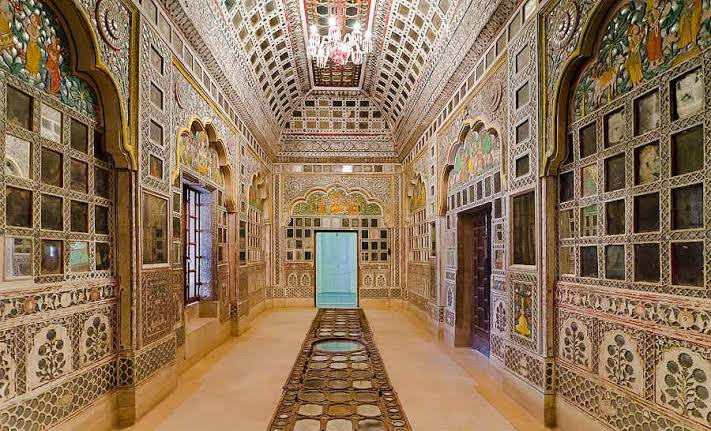
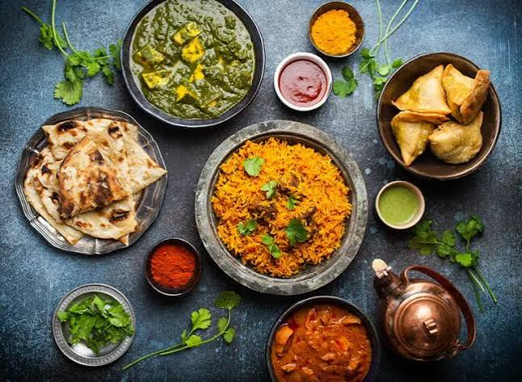

Discover a city
Browse attractions by cultural category, entry price, and step-free access. See the catalog beside a city map.
Cultural tourism / India / DEV AAT
A visual concept for the CultureRoute project. Study data is synthetic.
Find heritage sites, museums, religious places, and food experiences. Then see how the route and the evidence come together.
CultureRoute connects two experiences: a cultural day-trip planner for travelers and a DEV Lab for anyone who wants to inspect the source, transformations, charts, and forecasts.
See how it works01 / Discover and decide
Find the places that interest you, check what a route can cover, and keep the method in view.
Browse attractions by cultural category, entry price, and step-free access. See the catalog beside a city map.
Set a date, start time, budget, time window, and preferred stops. See schedules, travel legs, and costs.
Put the fastest feasible route beside the one with the most cultural stops under the same constraints.
Switch between chart, table, and calculation details. See counts, denominators, filters, and source rows.
A little inspiration
Categories the project studies across attraction listings, online interactions, and planned stops.

Explore historic places and see whether they make it into a feasible day plan.

Compare catalog presence with saves and selected itinerary stops.
Explore living heritage and see how religious sites appear in planned stops.

Make room for food experiences in a schedule that respects time and budget.
Choose a city and browse the full attraction catalog.
Add your date, budget, available hours, stop count, and preferences.
Compare feasible schedules and trace the numbers to source data.
02 / Plan and compare
A Saturday Jaipur example from the project specification: 09:00 start, six-hour window, INR 1,000 budget, three distinct stops.
Elapsed time
Elapsed time
Illustrative baseline from the specification. Plans depend on recorded directed travel legs; the planner does not cover every catalog attraction. Carbon is an estimate.
03 / Insights and predictions
Cultural attractions are 31.3% of listings, 31.3% of matched interactions, and 30.1% of selected planned stops in the specified study. Each share uses its own denominator.
These are separate populations. A chart in the application must show numerator, denominator, filters, and source cutoff.
04 / The evaluator's desk
Inspect raw tables, run guided transformations or read-only SQL, and compare before and after. The DEV Lab makes the method visible alongside the result.
See fields, row counts, missing values, and the selected source or prepared view.
Filter, derive, group, pivot, merge, or run a bounded read-only query.
Show the command, before/after tables, matching counts, chart, and export.
Saved-versus-planned attraction join: 352 matches, 11 saved only, 303 planned only in the full outer result.
How does the representation of heritage sites, museums, religious sites, and food experiences differ across attraction listings, online interactions, and planned stops?
CultureRoute supports discovery of local culture. Its synthetic data cannot measure real visits, spending, employment, or economic impact.
Good to know
No. This is a visual concept for an exploratory planning and analysis website. It does not book attractions or use live prices.
No. Each city lists 15 attractions, while the recorded travel matrix covers 10. The planner should flag coverage gaps and only use recorded directed legs.
No. Both source packs are synthetic. The reported shares describe those data, not actual visits or economic outcomes.
The specified design includes source rows, prepared views, guided transformations, bounded read-only SQL, charts, calculations, and exports.
Start with a city, shape a feasible route, and see the data behind every comparison.